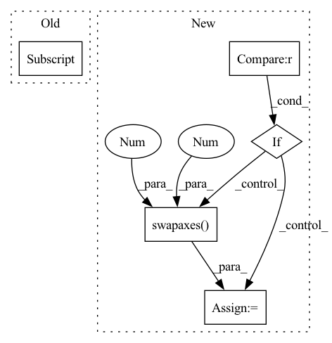

Pattern ID :36424
Before Change
else:
idxs = np.nonzero(adj)
edge_index = np.stack(idxs)
edge_weights = adj[idxs]
return edge_index, edge_weights
def edge_index_to_adj(edge_index: TensArray,After Change
assert 2 <= adj.ndim <= 3
assert adj.shape[-1] == adj.shape[-2]
if backend is torch :
adj = torch.transpose(adj, -2, -1)
index = adj.nonzero(as_tuple=True)
else:
adj = np.swapaxes( adj, -2 , -1 ) // transpose
index = adj.nonzero()
edge_attr = adj[index]
In pattern: SUPERPATTERN
Frequency: 3
Non-data size: 5
Instances Fragment ID: 103003266
Project Name: torchspatiotemporal/tsl
Commit Name: f28e5a2fddc34eeb90a13c113512c8ab12b6138b
Time: 2022-07-20
Author: ivan.marisca@hotmail.it
File Name: tsl/ops/connectivity.py
M Class Name: AnonimousClass
N Class Name: AnonimousClass
M Method Name: adj_to_edge_index(2)
N Method Name: adj_to_edge_index(1)
M Parent Class:
N Parent Class:
M File Name: tsl/ops/connectivity.py
N File Name: tsl/ops/connectivity.py
M Start Line: 92
M End Line: 114
N Start Line: 106
N End Line: 145
Before Change
axes[0].set_title("Occlusion")
// matshow plots x and y swapped
mat = axes[0] .matshow(np.swapaxes(occ_dem, 0, 1), vmin=dem_vmin,
vmax=dem_vmax, cmap=dem_cmap)
fig.colorbar(mat, ax=axes.ravel().tolist(), fraction=0.045)
After Change
mat = axes[1, 0].matshow(np.swapaxes(occ_data_um, 0, 1), vmin=0, vmax=4, cmap=um_cmap)
axes[1, 0].grid(False)
if gt_data_um is not None :
axes[1, 1].set_title("Ground-truth data uncertainty")
// matshow plots x and y swapped
mat = axes[1, 1].matshow(np.swapaxes( occ_data_um, 0 , 1 ) , vmin=0, vmax=4, cmap=um_cmap)
fig.colorbar(mat, ax=axes[1, :].ravel().tolist(), fraction=0.045)
axes[1, 1].grid(False)
Fragment ID: 103003259
Project Name: mstoelzle/solving-occlusion
Commit Name: e8005fc22f2a50ab96f9b4ba2981bb0ed71a5dc8
Time: 2021-01-13
Author: maximilian@stoelzle.ch
File Name: src/visualization/sample_plotter.py
M Class Name: AnonimousClass
N Class Name: AnonimousClass
M Method Name: draw_dataset_samples(9)
N Method Name: draw_dataset_samples(7)
M Parent Class:
N Parent Class:
M File Name: src/visualization/sample_plotter.py
N File Name: src/visualization/sample_plotter.py
M Start Line: 26
M End Line: 35
N Start Line: 10
N End Line: 54
Before Change
else:
idxs = np.nonzero(adj)
edge_index = np.stack(idxs)
edge_weights = adj[idxs]
return edge_index, edge_weights
def edge_index_to_adj(edge_index: TensArray,After Change
assert 2 <= adj.ndim <= 3
assert adj.shape[-1] == adj.shape[-2]
if backend is torch :
adj = torch.transpose(adj, -2, -1)
index = adj.nonzero(as_tuple=True)
else:
adj = np.swapaxes( adj, -2 , -1 ) // transpose
index = adj.nonzero()
edge_attr = adj[index]
Fragment ID: 103003277
Project Name: torchspatiotemporal/tsl
Commit Name: 50089afdf23de12eb6d11e9d5e7e64d949d45611
Time: 2022-08-18
Author: ivan.marisca@hotmail.it
File Name: tsl/ops/connectivity.py
M Class Name: AnonimousClass
N Class Name: AnonimousClass
M Method Name: adj_to_edge_index(2)
N Method Name: adj_to_edge_index(1)
M Parent Class:
N Parent Class:
M File Name: tsl/ops/connectivity.py
N File Name: tsl/ops/connectivity.py
M Start Line: 92
M End Line: 114
N Start Line: 106
N End Line: 145